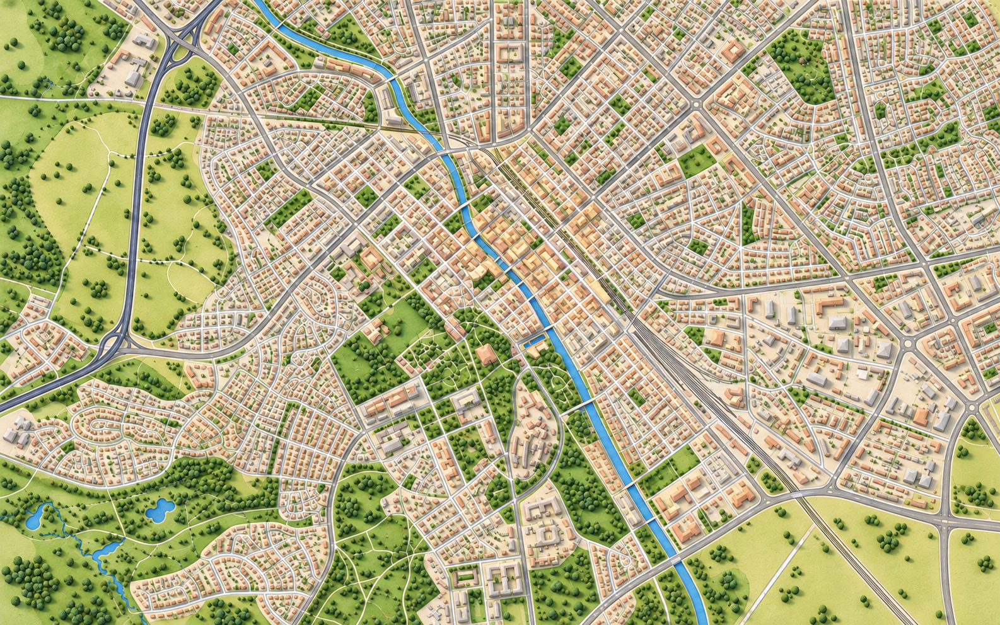

Explore Uppsala
A little guide to culture and student life. Select a place to discover more.
Show
All places
Museums
Churches
Student nations

Prototype: the map is AI-illustrated and the markers are approximate. Check locations against a geographic map before publishing.